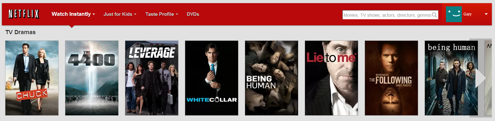
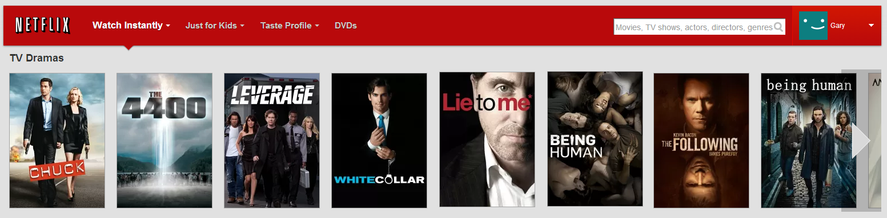
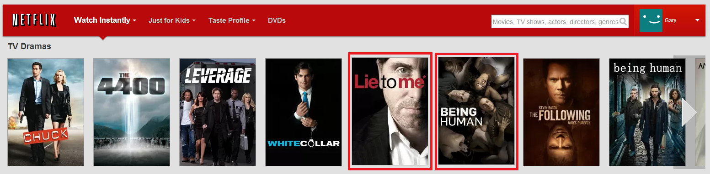
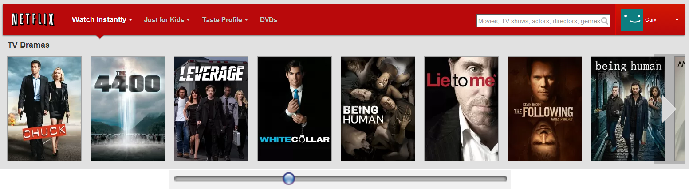
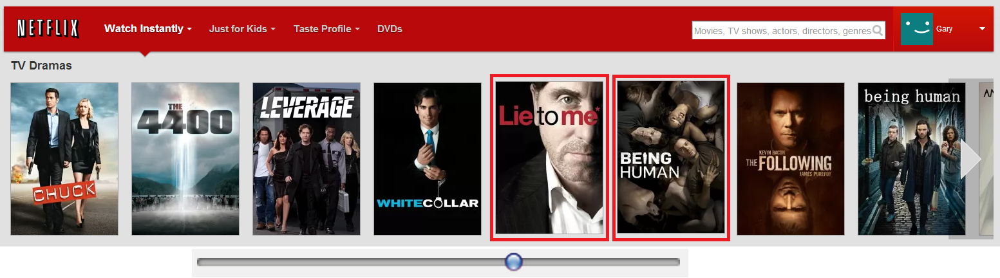
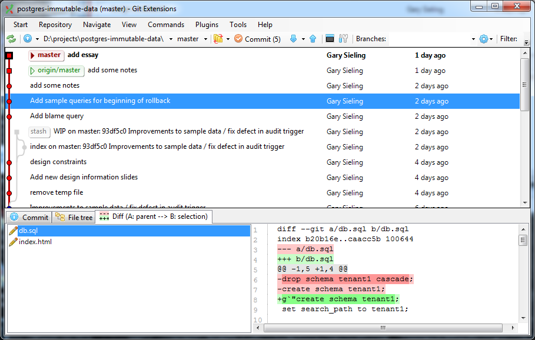
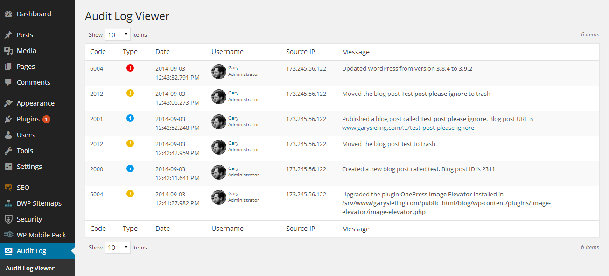
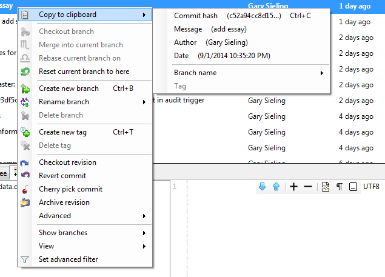

Immutable Data
in Postgres
Created by Gary Sieling / @garysieling
Overview
- Functional programming movement encourages immutable data
- Regulators require audit trails
- End users are really bad at describing problems
The Problem

The Problem

The Problem

The Problem
- "Why is this different than a week ago?" - Customer
- Worse in regualated industries (pharma, banking)
- Possible to answer, but time consuming
The Problem

The Problem

The Problem

Design Considerations (1 of x)

Design Considerations (1 of x)

Design Considerations (1 of x)

Design Considerations (1 of x)
- Request context (user/guid)
- Usage (current vs historical)
- Storage (deltas vs full data)
- Manner of use (readonly production access vs. planned)
Data Model
create table movies (title text);
create table movies$a (title text, audit_date timestamp(3));
create trigger movies$t
after insert on movies
for each row execute procedure audit();
CREATE FUNCTION audit() RETURNS trigger
LANGUAGE plpgsql AS $$
BEGIN
EXECUTE
'INSERT INTO movies$a (text, audit_date) VALUES ($1.text, $2);'
END;
$$;
Procedures witin Procedures
table_name = current_schema || '.' || format('%I', tables.table_name);
table_sql :=
format(
'create table %s$a
as select t.*,
null::varchar(1) audit_action,
null::varchar audit_request,
null::bigint audit_txid,
null::varchar audit_user,
null::timestamp audit_date
from %s t
where 0 = 1',
table_name,
table_name
);
Data Model
SELECT txid_current();
SELECT
split_part(application_name, ',', 1) user,
split_part(application_name, ',', 2) request
FROM pg_stat_activity
WHERE procpid = pg_backend_pid()
INTO v_context;
Demo - Blame Tool (x of x)
select a.*
(title <> lead(title) over w) title$c,
from movies$a a
where audit_action in ('I', 'U')
window w as (partition by id order by audit_date desc)
Demo - Blame Tool (x of x)
with history as (...)
select history.*,
(case when (title <> lead(title) over y)
then audit_user else null end) title$u,
dense_rank() over y title$r
from history
window y as (
partition by id order by audit_date desc, title$c desc)
) b
Demo - Blame Tool (x of x)
with history as (...),
ordered_history as (...)
select *
from ordered_history
where title$r = 1
Demo - Rollback Tool
from_sql :=
format(
'-- query to find what to undo
select %s, b.*
from (
select a.*,
%s
from %s a
window w as (partition by id order by audit_date desc)
) b
%s
order by audit_date desc
',
per_column('%% <> ${column}$p as ${column}$c', table, reserved_columns),
per_column('lead(${column}) over w ${column}$p', table, reserved_columns),
table,
where_clause
);
Generating Ranges (1 of 3)
select
id, title
from
movies_vw
where
license_effective @> now()
Generating Ranges (2 of 3)
CREATE view movie_ranges AS
SELECT
tsrange(
s.audit_date,
coalesce(lead(s.audit_date)
over(
partition by s.i_id
order by s.audit_date),
'infinity'),
'[)'
) m_effective,
m.audit_date
movie.name,
FROM movie$a s
Generating Ranges (3 of 3)
WITH s as (
SELECT
*
FROM movie_vw s
LEFT JOIN (
license_vw
) l ON l.name = m.licensee
),
all_joined as (
SELECT
-- anything not found in a left join gets turned into an infinite range
coalesce(mis_effective, tsrange('-infinity', 'infinity', '[]')) mis_effective,
coalesce(mir_effective, tsrange('-infinity', 'infinity', '[]')) mir_effective,
greatest(s._audit_date_, r._audit_date_) _audit_date_,
s.tmf_level
FROM s
LEFT JOIN r ON s.id = r.id
)
select *
from all_joined
where ...
Generating Ranges (3 of 3)
...show overlapping of ranges...
...picture...
Demo - Blame Tool with Timestamp
SELECT movie_user, license_user, test
FROM movies_vw
WHERE id = ...
AND date_range <@ '12345'
Demo - Compare Over Time Tool
Demo - See Actions
Things Postgres Gives Us
- Ranges
- Named window functions
- Array aggregation
- Triggers
Joins
- Allen's Interval Algebra
- Join IDs from two tables as usual
- Secondary condition to force time range overlap
Data Corrections
-
Can we roll back?
SQL Features (1 of ...)
- X except Y
SQL Features (1 of ...)
- Indexes as materialized views
SQL Features (1 of ...)
- SELECT FROM function
SQL Features (1 of ...)
- Named window
- Lead / Lag
Performance Considerations
- Unindexed data
- Indexing strategy - Datomic
- Full text search - Splunk
Alternate structures
- Single table
- Query rewriting
Minutea
- Word replaces characters
- Leading / trailing spaces
- Nulls / spaces / empty string
Other Considerations
- Global sequence number
- Local sequence number
- Vector clocks